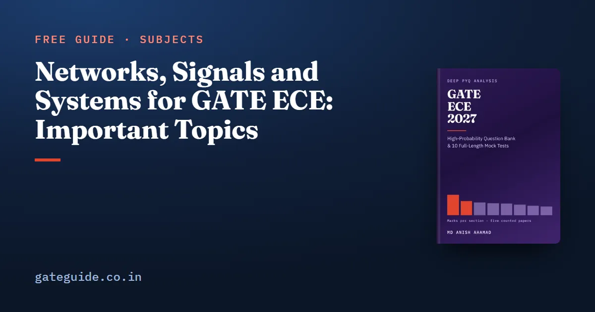

Networks, Signals and Systems for GATE ECE: Important Topics

Networks, Signals and Systems is the largest section of the GATE EC paper, with a counted mean of 17.0 marks across the five papers counted question by question against their official answer keys. It is also the only section a candidate cannot route around: its circuit half is the language Analog Circuits questions are posed in, and its LTI half is the language Control Systems and Communications questions are posed in. This guide sets out what actually recurs in it, what has never once appeared, and what the 2027 syllabus newly names.
In this guide
Key takeaways
- Counted marks by year: 21 (2010), 14 (2019), 17 (2020), 13 (2025), 20 (2026). Mean 17.0, and the section led the paper in four of the five years.
- Across the five papers it is 56 questions and 85 marks — the networks side 33, the signals side 52. The signals half was never the smaller half in any counted year.
- Four question families appear in all five papers: a phasor steady-state problem, exactly one two-port question, a z-transform or discrete-time transfer function, and a Fourier-family question.
- Wye-delta, group delay and phase delay by name, and the Norton equivalent as a section question have zero counted appearances in five papers.
- FIR and IIR filter design is newly named for 2027 but was asked twice in 2019 — Q39 and Q54 — by IIT Madras, the institute setting 2027.
- Plan the section at the middle of its 13-to-21 range, not the top. Syllabus wording changes, so confirm the current text against the notification on the official portal.
What the section is worth
| Paper | Organising institute | Section marks | Questions | Rank in the paper |
|---|---|---|---|---|
| 2010 | IIT Guwahati | 21 | 14 | 1st |
| 2019 | IIT Madras (sets 2027) | 14 | 9 | 1st, by one mark |
| 2020 | IIT Delhi | 17 | 11 | 1st |
| 2025 | IIT Roorkee | 13 | 9 | 3rd |
| 2026 | IIT Guwahati | 20 | 13 | 1st |
| Five papers | 85 | 56 | mean 17.0 |
Two honest qualifications belong next to that table. In 2025 the section was third, behind Engineering Mathematics at 15 and level with Analog Circuits at 13. And 2019's first place is nominal — 14 marks against Engineering Mathematics' 13. A claim that this section is always comfortably the biggest is contradicted by two of its own five papers. What survives is stronger: its worst counted year, 13 marks, is still above the five-paper mean of every other technical section. It has a high floor. The same treatment for the other eight sections is in the GATE ECE subject-wise weightage guide.
The circuits half is the smaller half
Splitting the section the way the older tables do, the networks side took 8, 5, 7, 6 and 7 marks across the five papers — 33 in total — and the signals side 13, 9, 10, 7 and 13, or 52. The signals half carries 61 per cent of the section, and the per-year ratio runs from 36:64 in 2019, the most signals-heavy paper, to 46:54 in 2025, the most balanced. It points the same way as the institute evidence below.
What recurs
Everything here is a count, and every claim carries a question number you can check against the paper.
| Family | Papers | Where |
|---|---|---|
| Phasor analysis of a small AC network | 5 of 5 | 2010 Q33; 2019 Q40; 2020 Q26, Q38; 2025 Q20, Q39; 2026 Q39 |
| Exactly one two-port question | 5 of 5 | 2010 Q4; 2019 Q14; 2020 Q25; 2025 Q40; 2026 Q51 |
| z-transform, ROC or a discrete-time transfer function | 5 of 5 | 2010 Q14, Q42; 2019 Q13; 2020 Q24, Q63; 2025 Q27; 2026 Q16 |
| Fourier family — series, transform or fundamental period | 5 of 5 | 2010 Q2; 2019 Q31; 2020 Q62; 2025 Q18, Q55; 2026 Q37, Q43 |
| An LTI property question — linearity, time invariance, causality, stability | 4 of 5 | 2010 Q42; 2020 Q15; 2025 Q17, Q27; 2026 Q16, Q47. Absent from 2019 |
| A dc or resistive node/mesh analysis question | 4 of 5 | 2010 Q34; 2020 Q19; 2025 Q19; 2026 Q30. Absent from 2019 |
The two-port row is the single most reliable regularity in the whole counted set — one such question per paper, in all five. But its form is not as reliable as its presence. In four papers it is "extract the parameter matrix", with the parameter set rotating between y, z, Z and ABCD. In 2019 it is a resistive two-port with a stated measurement, asking for the short-circuit current at the far port by reciprocity, never naming a parameter set at all. Expect a two-port; do not assume it is a matrix.
Three more families run at three of five: RL and RC transients (2010, 2019, 2026), Laplace pairs and theorems (2010, 2019, 2026), and impulse response or convolution (2010 Q15, 2020 Q15, 2026 Q13).
What does not recur
This list is as useful as the one above, because it tells you where not to spend a second week.
- Wye-delta transformation — named in the syllabus in every one of those years and not asked once in five papers.
- Group delay and phase delay by name — zero counted appearances. The nearest is 2010 Q18, which uses a phase shift at one frequency.
- The Norton equivalent as a section question — zero. Thevenin appears once, in 2020 Q19.
- Circular convolution, and power factor or reactive power as the asked quantity — zero.
- Every named filter-design recipe — windowing, the bilinear transformation, impulse invariance, linear-phase symmetry types and analogue-prototype order calculations. Not one counted instance.
None of that means a setter will not ask them. It means the five papers read for this site do not show them yet, which is a different and smaller claim. Treat them as insurance, not as a plan.
What 2027 newly names, and why it is not new ground
The 2027 Networks, Signals and Systems text adds FIR and IIR filter design, Nyquist sampling theorem and sampling and reconstruction, while the older sampling and discrete-time-processing lines leave. LTI systems also moves ahead of the continuous-time and discrete-time paragraphs — not a word of it changed, but it is now the topic the section is built around. The full 2026-to-2027 comparison is in the GATE ECE 2027 syllabus changes guide.
Filter design is the largest single addition anywhere in the 2027 EC syllabus, and it is the one most likely to be mis-taught as brand new territory. It is not. GATE 2019 Q39 and Q54 are both filter-design questions, both worth 2 marks, both in this section, and both set by IIT Madras — the institute setting GATE 2027. Together they are 4 of that paper's 14 section marks, more than a quarter of the section, from the syllabus line a reader would have assumed had no history at all. Anyone can download the 2019 paper and check; the official paper links are here.
Three cautions, because this is one paper:
- Two questions in one paper is a precedent, not a rate. It licenses "the 2027 institute has asked this twice in the only paper of its we can read", not "filter design carries 4 marks".
- Neither 2019 question is a textbook recipe. There is no window function, no bilinear transformation, no impulse invariance and no linear-phase symmetry question in any of the five counted papers. What 2019 asked was design by zero placement and design by least-squares approximation — both closer to the z-transform and DTFT material this section examines every year than to a filter-design chapter.
- The named recipes still have no history. They are argued for from the syllabus wording alone, and that argument has not become any stronger.
So the practical order is: work zero placement and least-squares approximation first, because those are the two forms the 2027 institute has actually set, then the named recipes as cover for the syllabus sentence.
What the 2019 paper says about 2027
GATE 2027 is organised by IIT Madras, and 2019 is the one counted paper IIT Madras also set. It is worth reading carefully and worth not over-reading.
It is the flattest of the five. Every technical section lands between nine and fourteen marks — three sections at 9, two at 10, one at 11, one at 13, one at 14. Every other counted year has both a section at 13 or higher and a section at 7 or lower. A candidate who wrote off a section in 2019 lost about as much as a candidate who wrote off any other section.
Inside its 14 marks, the section leaned hard towards signals, roughly 5 marks of circuit theory against 9 of signals. And the opening sentence of the syllabus wording is simply absent from it: no Thevenin, no Norton, no maximum power transfer, no resonance, no wye-delta and no mesh or nodal analysis. Of that entire opening line, the only item IIT Madras asked was reciprocity, at Q14.
One paper is a signal, not a law. The correct inference is do not over-weight the network theorems, not cut them — Thevenin, node analysis and maximum power transfer appear in four of the five counted papers. What the 2019 paper does support is a number: budget this section at the middle of its 13-to-21 range rather than the top, since the 2027 institute's only counted paper produced its second-lowest result. That reasoning feeds directly into the GATE ECE 2027 preparation strategy, and the section sits at the top of the cross-subject priority list in the GATE ECE important topics guide.
Format, and the traps that repeat
Across the five papers this section ran 43 MCQ, 10 NAT and 3 MSQ — 76.8 per cent multiple choice, a higher share than most sections. Multiple-select appears only from 2025, and every counted instance here is a statement-checking question on the signals side, never a circuit computation.
The errors the counted questions are built to catch repeat more reliably than the topics do: rms against peak in an instrument-framed phasor problem; rad/s against Hz; half-wave symmetry killing the even harmonics while even symmetry kills the sine terms; the assumption that a transfer function has one ROC rather than several; pole-zero cancellation mistaken for stability; and, inside the filter-design pair, confusing a filter's length with its order.
The GATE ECE 2027 book carries this section's full concept map with every counted question number, the ranked prediction table, and questions written for the book on each of these patterns with worked solutions.
Frequently asked questions
How many marks is Networks, Signals and Systems in GATE ECE?
A counted mean of 17.0 marks across the five papers counted question by question for this site, which is more than any other technical section. The individual years were 21, 14, 17, 13 and 20 marks in 2010, 2019, 2020, 2025 and 2026. Its lowest counted year was still higher than the mean of every other technical section.
Is network theory or signals and systems more important for GATE ECE?
Signals, on the counted evidence. Splitting the section the way older tables do, the networks side took 33 of its 85 counted marks across five papers and the signals side took 52. The signals half was never the smaller half in any counted year, and the most signals-heavy paper of the five was the one set by IIT Madras.
Is FIR and IIR filter design new in the GATE 2027 ECE syllabus?
The phrase is new to the 2027 text, but the topic is not new ground. GATE 2019 Q39 and Q54 are both filter-design questions, both worth 2 marks, both in this section, and both set by IIT Madras, which is the institute setting 2027. Together they are 4 of that paper's 14 section marks.
Which topics in this section have never been asked?
In the five counted papers, there is not one wye-delta transformation question, no question asking for group delay or phase delay by name, and no Norton equivalent asked as a section question. Circular convolution and the named filter-design recipes such as windowing, the bilinear transformation and impulse invariance also produced no counted question.
How should I plan marks for this section in GATE 2027?
At the middle of its range rather than the top. The counted years run 13 to 21, and the one paper set by the 2027 organising institute produced 14 marks over nine questions, second-lowest of the five. Budget it as the largest section in the paper without assuming it will reach twenty marks.
What question format does this section use?
Across the five counted papers it ran 43 multiple-choice, 10 numerical-answer and 3 multiple-select questions, or 76.8 per cent MCQ, which is a higher share than most sections in the paper. Multiple-select questions appear only from 2025 onwards, and every counted one in this section is a statement-checking question on the signals side.
Sources
- GATE 2027 official website (IIT Madras)
- GATE official paper archive (IIT Madras)
- GATE official paper archive (IIT Guwahati)
Dates, fees and the syllabus are set by the GATE 2027 organising institute and can change. Always confirm at gate2027.iitm.ac.in.